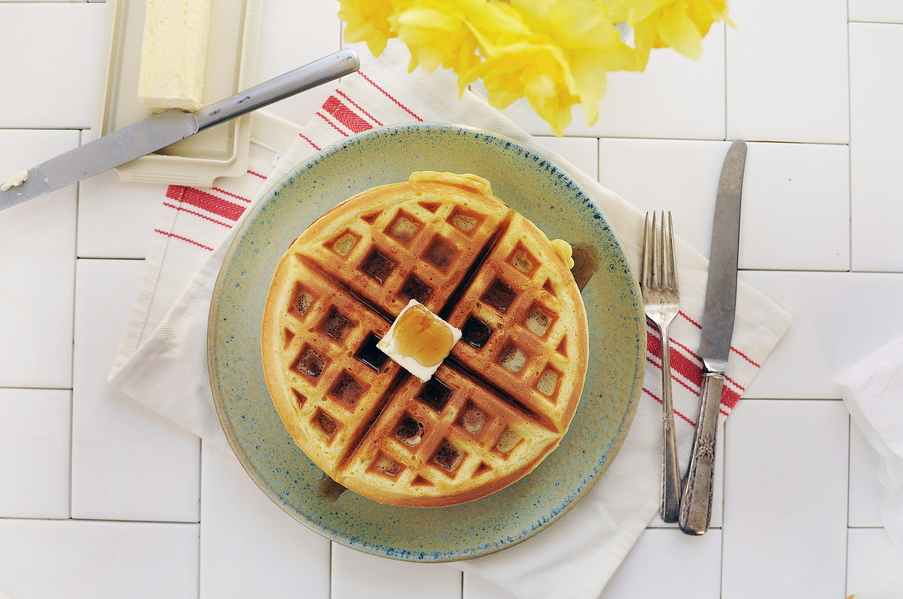

Waffles

Description
Waffles are a popular breakfast dish made from a batter that is cooked between two hot plates, creating a crispy exterior and a soft interior. They can be served with a variety of toppings, such as syrup, fruit, whipped cream, or ice cream.
Ingredients
- 2 cups all-purpose flour
- 2 tablespoons sugar
- 1 tablespoon baking powder
- ½ teaspoon salt
- 2 large eggs
- 1¾ cups milk
- ½ cup vegetable oil
- 1 teaspoon vanilla extract
Steps
- Preheat your waffle iron according to the manufacturer's instructions.
- In a large mixing bowl, whisk together the flour, sugar, baking powder, and salt.
- In another bowl, beat the eggs and then whisk in the milk, vegetable oil, and vanilla extract.
- Pour the wet ingredients into the dry ingredients and stir until just combined. Be careful not to overmix; it's okay if there are a few lumps.
- Lightly grease the waffle iron with cooking spray or oil.
- Pour the recommended amount of batter onto the preheated waffle iron and close the lid.
- Cook according to the manufacturer's instructions, usually for about 5 minutes, until the waffles are golden brown and crisp.
- Carefully remove the waffles and serve immediately with your favorite toppings.
Home